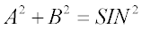
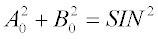

Scattering from anisotropic surfaces (for example, brushed, diamond-turned) is not rotationally symmetric at normal incidence, and not necessarily symmetric about the plane of incidence otherwise.
Syntax
... model X ...
Y
Z
U
V
W
R
T
A
-X
-Y
-Z
-U
-V
-W
-R
-T
-A
:
where:
| Entry | Anisotropic Axis |
|---|---|
| X Y Z | Global coordinate direction |
| U V W | CURVE object parametric direction or local x,y,z of SURFACE object |
| R T A | Radial, angular, or axial direction for LENS, SWEEP AXIS, or PARAMETERized/LOCALized SURFACE object |
Remarks
| Direction | Components | Magnitude |
|---|---|---|
| Scatter | A, B | see equation (1) (scatter angle from normal) |
| Specular | Ao, Bo | see equation (2) (specular angle from normal) |
(1) 
(2) 